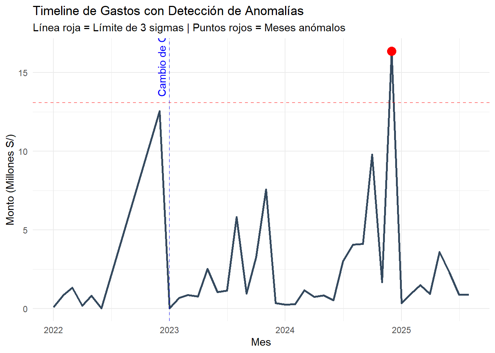
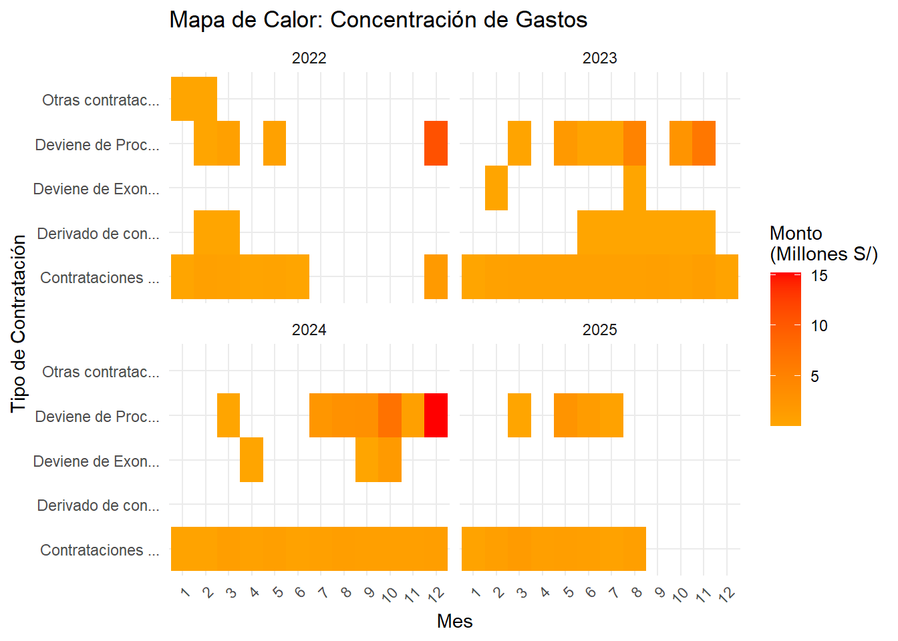
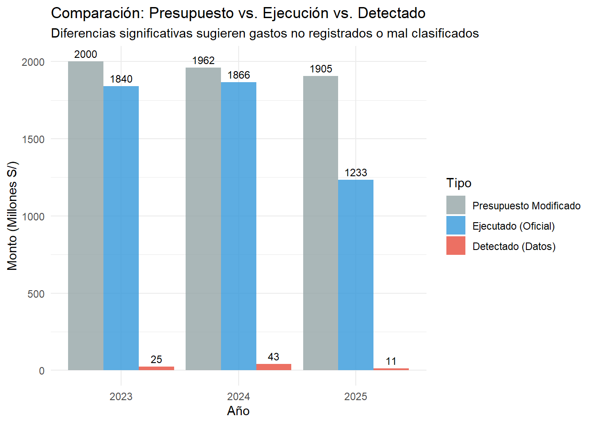
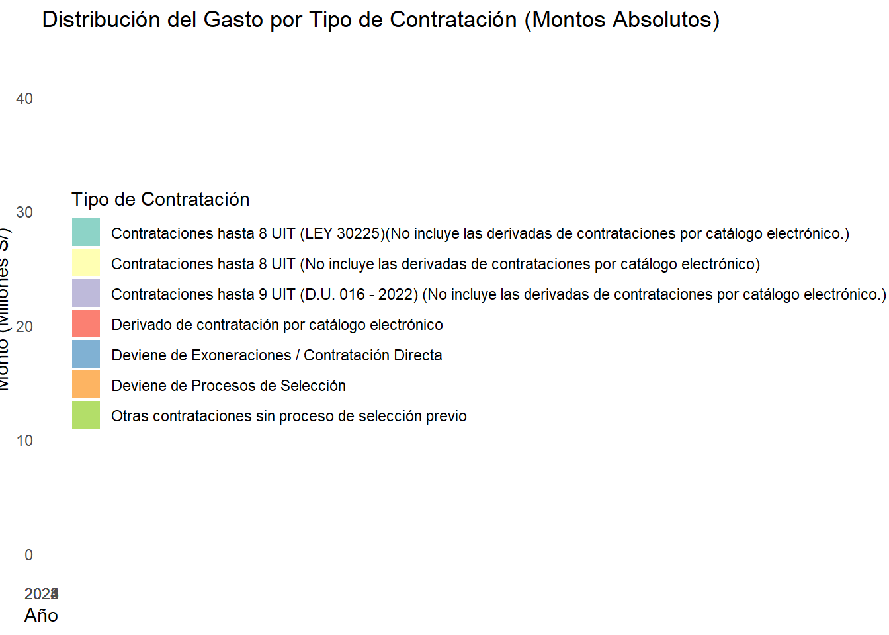
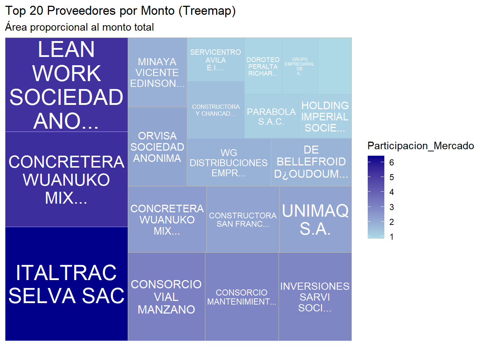
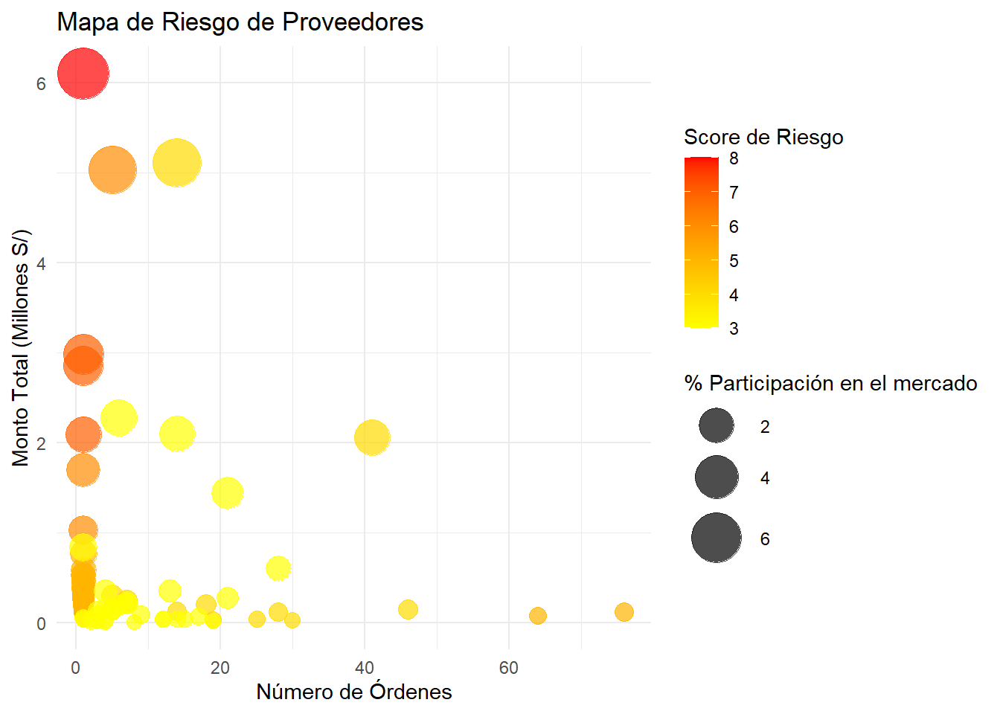
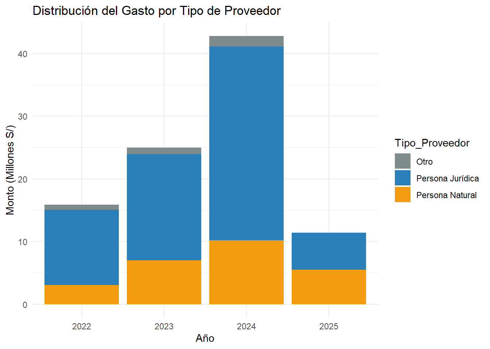

The following object is masked from 'package:tidyr':
crossing
The following objects are masked from 'package:lubridate':
%--%, union
The following objects are masked from 'package:dplyr':
as_data_frame, groups, union
The following objects are masked from 'package:stats':
decompose, spectrum
The following object is masked from 'package:base':
union
library(visNetwork)# 1. LIMPIEZA Y PREPARACIÓN DE DATOS# Cargar los datosdatos <-read_excel("DRTC-H.xlsx")# Corregir nombres de columnas (quitar acentos y caracteres especiales)names(datos) <-c("N", "Entidad", "Tipo_Orden", "Numero_Orden", "Tipo_Contratacion","Fecha_Emision", "Fecha_Compromiso", "Monto", "RUC", "Razon_Social", "Estado", "Estado_Registro", "Observaciones")# Convertir fechas a formato Datedatos <- datos %>%mutate(Fecha_Emision =as.Date(Fecha_Emision),Fecha_Compromiso =as.Date(Fecha_Compromiso) )# Convertir montos a numéricodatos <- datos %>%mutate(Monto_limpio =as.numeric(gsub(",", "", gsub("^S/\\. ", "", Monto))) )# Eliminar filas con montos nulos si las haydatos <- datos %>%filter(!is.na(Monto_limpio))datos <- datos %>%mutate(Nombre_Corto =ifelse(nchar(Razon_Social) >15, paste0(substr(Razon_Social, 1, 12), "..."), Razon_Social))datos <- datos %>%mutate(Contratacion_Corto =ifelse(nchar(Tipo_Contratacion) >20, paste0(substr(Tipo_Contratacion, 1, 15), "..."), Tipo_Contratacion))
# ========================================# 1. RESUMEN Y DESCRIPCIÓN DE DATOS# ========================================cat("\n=====================================\n")
=====================================
cat("1. RESUMEN ESTADÍSTICO GENERAL\n")
1. RESUMEN ESTADÍSTICO GENERAL
cat("=====================================\n\n")
=====================================
# Estadísticas básicas de montoscat("ESTADÍSTICAS DE MONTOS:\n")
# B. Análisis de estacionalidad sospechosadatos_con_periodo <- datos %>%mutate(Mes =month(Fecha_Emision),Trimestre =quarter(Fecha_Emision), Año =year(Fecha_Emision) )# Detectar si hay concentración en fin de año (típico en malversación)gasto_fin_año <- datos_con_periodo %>%filter(Mes %in%c(11,12)) %>%group_by(Año) %>%summarise(Monto_Fin_Año =sum(Monto_limpio))gasto_total_anual <- datos_con_periodo %>%group_by(Año) %>%summarise(Monto_Total_Año =sum(Monto_limpio))concentracion_fin_año <- gasto_fin_año %>%left_join(gasto_total_anual, by ="Año") %>%mutate( Porcentaje_Fin_Año = (Monto_Fin_Año / Monto_Total_Año) *100 )print("CONCENTRACIÓN DE GASTO EN FIN DE AÑO:")
# A tibble: 5 × 8
# Groups: Tipo_Contratacion [3]
Numero_Orden RUC Razon_Social Tipo_Contratacion Fecha_Emision Monto_limpio
<dbl> <dbl> <chr> <chr> <date> <dbl>
1 262 1.56e10 DE BELLEFRO… Deviene de Exone… 2024-10-23 1691456
2 314 2.03e10 ITALTRAC SE… Deviene de Proce… 2024-12-18 6100000
3 172 2.03e10 DISTRIBUCIO… Derivado de cont… 2023-07-19 44714.
4 34 1.02e10 EULOGIO FLO… Derivado de cont… 2022-03-16 36393.
5 1009 2.06e10 CONSORCIO V… Deviene de Proce… 2024-12-29 2980000
# ℹ 2 more variables: Limite_Superior <dbl>, Sobreprecio_Porcentaje <dbl>
# ========================================# 7. ANÁLISIS DE CAMBIO DE GESTIÓN# ========================================# Comparar patrones antes y después del cambio de gestión (2023)antes_cambio <- datos %>%filter(Fecha_Emision <as.Date("2023-01-01"))despues_cambio <- datos %>%filter(Fecha_Emision >=as.Date("2022-01-01"))# Proveedores nuevos post-cambioproveedores_nuevos <- despues_cambio %>%filter(!(RUC %in% antes_cambio$RUC)) %>%group_by(RUC, Razon_Social) %>%summarise(Monto_Total =sum(Monto_limpio),Num_Ordenes =n(),Primera_Aparicion =min(Fecha_Emision),.groups ='drop' ) %>%arrange(desc(Monto_Total))print("PROVEEDORES NUEVOS POST-CAMBIO DE GESTIÓN (Top 10):")
[1] "PROVEEDORES NUEVOS POST-CAMBIO DE GESTIÓN (Top 10):"
Warning in left_join(., proveedores_nuevos %>% select(RUC, Es_Nuevo_2023 = Primera_Aparicion), : Detected an unexpected many-to-many relationship between `x` and `y`.
ℹ Row 228 of `x` matches multiple rows in `y`.
ℹ Row 168 of `y` matches multiple rows in `x`.
ℹ If a many-to-many relationship is expected, set `relationship =
"many-to-many"` to silence this warning.
# ========================================# 9. VISUALIZACIONES CLAVE# ========================================# A. Timeline de anomalíastimeline_anomalias <-ggplot(analisis_temporal, aes(x = Año_Mes, y = Monto_Mensual/1000000)) +geom_line(color ="#34495e", linewidth =1) +geom_point(data = meses_anomalos, aes(x = Año_Mes, y = Monto_Mensual/1000000),color ="red", size =4) +geom_hline(yintercept = limite_superior/1000000, linetype ="dashed", color ="red", alpha =0.5) +geom_vline(xintercept =as.Date("2023-01-01"), linetype ="dashed", color ="blue", alpha =0.5) +annotate("text", x =as.Date("2023-01-01"), y =max(analisis_temporal$Monto_Mensual/1000000),label ="Cambio de Gestión", angle =90, vjust =-0.5, color ="blue") +labs(title ="Timeline de Gastos con Detección de Anomalías",subtitle ="Línea roja = Límite de 3 sigmas | Puntos rojos = Meses anómalos",x ="Mes", y ="Monto (Millones S/)") +theme_minimal()timeline_anomalias

# B. Mapa de calor de riesgo por mes y tipomapa_calor <- datos_con_periodo %>%group_by(Año, Mes, Contratacion_Corto) %>%summarise(Monto_Total =sum(Monto_limpio)/1000000,.groups ='drop' ) %>%ggplot(aes(x =factor(Mes), y = Contratacion_Corto, fill = Monto_Total)) +geom_tile() +facet_wrap(~Año) +scale_fill_gradient2(low ="white", mid ="orange", high ="red",midpoint =median(datos_con_periodo$Monto_limpio/1000000)) +labs(title ="Mapa de Calor: Concentración de Gastos",x ="Mes", y ="Tipo de Contratación",fill ="Monto\n(Millones S/)") +theme_minimal() +theme(axis.text.x =element_text(angle =45, hjust =1))mapa_calor

# Clasificación por tipo de proveedordatos <- datos %>%mutate(Tipo_Proveedor =case_when(str_starts(RUC, "10") ~"Persona Natural",str_starts(RUC, "20") ~"Persona Jurídica",TRUE~"Otro" ))# Tabla de frecuencias por tipo de proveedorcat("\n\nTABLA DE FRECUENCIAS POR TIPO DE PROVEEDOR:\n")
# Gráfico de evolución anualgrafico_evolucion <-ggplot(comparacion_anual, aes(x =factor(Año))) +geom_bar(aes(y = Monto_Total/1000000), stat ="identity", fill ="#3498db", alpha =0.7) +geom_line(aes(y = Num_Ordenes/10, group =1), color ="#e74c3c", linewidth =2) +geom_point(aes(y = Num_Ordenes/10), color ="#e74c3c", linewidth =3) +scale_y_continuous(name ="Monto Total (Millones S/)",sec.axis =sec_axis(~.*10, name ="Número de Órdenes") ) +labs(title ="Evolución Anual del Gasto y Órdenes",subtitle ="Barras = Monto Total | Línea = Número de Órdenes",x ="Año" ) +theme_minimal() +theme(plot.title =element_text(size =14, face ="bold"),axis.text.x =element_text(size =11) )
Warning in geom_point(aes(y = Num_Ordenes/10), color = "#e74c3c", linewidth =
3): Ignoring unknown parameters: `linewidth`
datos_graf_presupuesto <- analisis_presupuesto %>%select(Año, PIM, Ejecutado_Oficial, Gasto_Detectado) %>%pivot_longer(cols =c(PIM, Ejecutado_Oficial, Gasto_Detectado), names_to ="Tipo", values_to ="Monto") %>%mutate(Tipo =factor(Tipo, levels =c("PIM", "Ejecutado_Oficial", "Gasto_Detectado")))grafico_presupuesto <-ggplot(datos_graf_presupuesto, aes(x =factor(Año), y = Monto/1000000, fill = Tipo)) +geom_bar(stat ="identity", position ="dodge", alpha =0.8) +scale_fill_manual(values =c("PIM"="#95a5a6", "Ejecutado_Oficial"="#3498db", "Gasto_Detectado"="#e74c3c"),labels =c("Presupuesto Modificado", "Ejecutado (Oficial)", "Detectado (Datos)")) +labs(title ="Comparación: Presupuesto vs. Ejecución vs. Detectado",subtitle ="Diferencias significativas sugieren gastos no registrados o mal clasificados",x ="Año",y ="Monto (Millones S/)",fill ="Tipo" ) +theme_minimal() +geom_text(aes(label =round(Monto/1000000, 0)), position =position_dodge(width =0.9), vjust =-0.5, size =3)print(grafico_presupuesto)

# ========================================# 4. ANÁLISIS DE FRACCIONAMIENTO POR TIPO# ========================================cat("\n\n=====================================\n")
# Para personas jurídicasfraccion_juridicas <- fraccionamiento_por_tipo %>%filter(Tipo_Proveedor =="Persona Jurídica") %>%group_by(RUC, Razon_Social) %>%summarise(Casos =n(),Monto_Total =sum(Monto_limpio),Dias_Promedio =mean(Dias_Entre_Ordenes),.groups ='drop' ) %>%arrange(desc(Casos)) %>%head(10)cat("\nTop 10 Personas Jurídicas con Fraccionamiento:\n")
Top 10 Personas Jurídicas con Fraccionamiento:
print(fraccion_juridicas)
# A tibble: 10 × 5
RUC Razon_Social Casos Monto_Total Dias_Promedio
<dbl> <chr> <int> <dbl> <dbl>
1 20573209231 MAZZINI CORREDORES DE SEGUROS S.… 7 9837. 1.57
2 20601368651 GRUPO JULIETT EMPRESA INDIVIDUAL… 6 4209. 1.5
3 20603702001 INVERSIONES DAJAZ SOCIEDAD ANONI… 5 4946. 1.6
4 20103913340 ORVISA SOCIEDAD ANONIMA 4 16559. 1.25
5 20454073143 LA POSITIVA VIDA SEGUROS Y REASE… 4 4153. 2
6 20601946590 INVERSIONES IMPERIO SELVA E.I.R.L 4 4929. 3
7 20126850680 SEDA HUANUCO S.A. 3 3034. 3
8 20285378754 DISTRIB DE COMP ELECT Y SERV DE … 3 43710. 5.33
9 20528925970 CENTRO MEDICO ESPECIALIZADO SANT… 3 12948 0.667
10 20573162332 CONSTRUCTORA Y CHANCADORA MAPRES… 3 101400 1
ggplot(datos, aes(x = Contratacion_Corto, y = Monto_limpio/1000, fill = Contratacion_Corto)) +geom_boxplot(alpha =0.7, outlier.color ="red") +scale_y_continuous(labels = scales::comma) +labs(title ="Distribución de Montos por Tipo de Contratación",x ="Tipo de Contratación", y ="Monto (en miles de S/.)") +theme_minimal() +theme(axis.text.x =element_text(angle =45, hjust =1),legend.position ="none")
cat("5. ANÁLISIS DE RELACIONES ENTRE VARIABLES\n")
5. ANÁLISIS DE RELACIONES ENTRE VARIABLES
cat("=====================================\n\n")
=====================================
# Análisis por tipo de contrataciónrelacion_tipo_contratacion <- datos %>%group_by(Tipo_Contratacion, Tipo_Proveedor) %>%summarise(Num_Ordenes =n(),Monto_Total =sum(Monto_limpio),Monto_Promedio =mean(Monto_limpio),CV =sd(Monto_limpio) /mean(Monto_limpio),.groups ='drop' ) %>%arrange(desc(Monto_Total))cat("RELACIÓN TIPO CONTRATACIÓN - TIPO PROVEEDOR:\n")
# A tibble: 15 × 6
Tipo_Contratacion Tipo_Proveedor Num_Ordenes Monto_Total Monto_Promedio
<chr> <chr> <int> <dbl> <dbl>
1 Deviene de Procesos de… Persona Juríd… 175 56494143. 322824.
2 Contrataciones hasta 8… Persona Natur… 2159 16167452. 7488.
3 Contrataciones hasta 8… Persona Juríd… 834 7058793. 8464.
4 Deviene de Procesos de… Persona Natur… 42 6284841. 149639.
5 Contrataciones hasta 8… Persona Natur… 309 2152616. 6966.
6 Deviene de Procesos de… Otro 6 1780890 296815
7 Deviene de Exoneracion… Otro 1 1691456 1691456
8 Contrataciones hasta 8… Persona Juríd… 168 1176656. 7004.
9 Contrataciones hasta 9… Persona Natur… 152 940105. 6185.
10 Contrataciones hasta 9… Persona Juríd… 50 677422. 13548.
11 Deviene de Exoneracion… Persona Juríd… 4 224691. 56173.
12 Derivado de contrataci… Persona Juríd… 49 147669. 3014.
13 Derivado de contrataci… Persona Natur… 11 71276. 6480.
14 Otras contrataciones s… Persona Juríd… 5 52658. 10532.
15 Contrataciones hasta 8… Otro 2 45989 22994.
# ℹ 1 more variable: CV <dbl>
cat("6. DISTRIBUCIÓN DEL GASTO POR TIPO DE CONTRATACIÓN\n")
6. DISTRIBUCIÓN DEL GASTO POR TIPO DE CONTRATACIÓN
cat("=====================================\n\n")
=====================================
# Distribución por año y tipodistribucion_tipo_año <- datos %>%group_by(Año, Tipo_Contratacion) %>%summarise(Monto_Total =sum(Monto_limpio),Num_Ordenes =n(),.groups ='drop' ) %>%group_by(Año) %>%mutate(Porcentaje_Monto = Monto_Total /sum(Monto_Total) *100,Porcentaje_Ordenes = Num_Ordenes /sum(Num_Ordenes) *100 )# Tabla resumentabla_distribucion <- distribucion_tipo_año %>%select(Año, Tipo_Contratacion, Monto_Total, Porcentaje_Monto) %>%arrange(Año, desc(Monto_Total)) %>%group_by(Año) %>%slice_head(n =5) # Top 5 por añoprint(tabla_distribucion)
# A tibble: 15 × 4
# Groups: Año [4]
Año Tipo_Contratacion Monto_Total Porcentaje_Monto
<dbl> <chr> <dbl> <dbl>
1 2022 Deviene de Procesos de Selección 12241457. 77.2
2 2022 Contrataciones hasta 8 UIT (LEY 30225)(No… 1850128. 11.7
3 2022 Contrataciones hasta 9 UIT (D.U. 016 - 20… 1617527. 10.2
4 2022 Otras contrataciones sin proceso de selec… 94766. 0.597
5 2022 Derivado de contratación por catálogo ele… 56999. 0.359
6 2023 Deviene de Procesos de Selección 16491826. 66.1
7 2023 Contrataciones hasta 8 UIT (LEY 30225)(No… 8221153. 32.9
8 2023 Derivado de contratación por catálogo ele… 161947. 0.649
9 2023 Deviene de Exoneraciones / Contratación D… 93450 0.374
10 2024 Deviene de Procesos de Selección 31433784. 73.5
11 2024 Contrataciones hasta 8 UIT (LEY 30225)(No… 9531404. 22.3
12 2024 Deviene de Exoneraciones / Contratación D… 1822697. 4.26
13 2025 Deviene de Procesos de Selección 4392807. 38.6
14 2025 Contrataciones hasta 8 UIT (LEY 30225)(No… 3669550. 32.2
15 2025 Contrataciones hasta 8 UIT (No incluye la… 3329272. 29.2
graf_absolutos <-ggplot(distribucion_tipo_año, aes(x =factor(Año), y = Monto_Total/1000000, fill = Tipo_Contratacion)) +# Eliminar reorder()geom_bar(stat ="identity", position ="stack") +labs(title ="Distribución del Gasto por Tipo de Contratación (Montos Absolutos)",x ="Año",y ="Monto (Millones S/)",fill ="Tipo de Contratación" ) +theme_minimal() +scale_fill_brewer(palette ="Set3")print(graf_absolutos)

cambios_distribucion <- distribucion_tipo_año %>%group_by(Tipo_Contratacion) %>%arrange(Año) %>%mutate(Cambio_Porcentaje = Porcentaje_Monto -lag(Porcentaje_Monto) ) %>%filter(abs(Cambio_Porcentaje) >5, !is.na(Cambio_Porcentaje))cat("\n\nCAMBIOS SIGNIFICATIVOS EN DISTRIBUCIÓN (>5 puntos porcentuales):\n")
CAMBIOS SIGNIFICATIVOS EN DISTRIBUCIÓN (>5 puntos porcentuales):
library(treemapify)concentracion_corto <- concentracion_proveedores %>%head(20) %>%mutate(Nombre_Corto =ifelse(nchar(Razon_Social) >25,paste0(substr(Razon_Social, 1, 22), "..."), Razon_Social))ggplot(concentracion_corto,aes(area = Monto_Total, fill = Participacion_Mercado, label = Nombre_Corto)) +geom_treemap() +geom_treemap_text(colour ="white", place ="centre", grow =TRUE, reflow =TRUE) +# Agregar reflowlabs(title ="Top 20 Proveedores por Monto (Treemap)",subtitle ="Área proporcional al monto total") +scale_fill_gradient(low ="lightblue", high ="darkblue") +theme_minimal()

ggplot(score_integral, aes(x = Num_Ordenes, y = Monto_Total/1000000,size = Participacion_Mercado, color = SCORE_RIESGO_TOTAL)) +geom_point(alpha =0.7) +scale_size(range =c(3,12)) +scale_color_gradient(low ="yellow", high ="red") +labs(title ="Mapa de Riesgo de Proveedores",x ="Número de Órdenes", y ="Monto Total (Millones S/)",size ="% Participación en el mercado", color ="Score de Riesgo") +theme_minimal()

serie_tiempo_contratacion <- datos %>%mutate(Año_Mes =floor_date(Fecha_Emision, "month")) %>%group_by(Año_Mes, Tipo_Contratacion) %>%summarise(Monto_Mensual =sum(Monto_limpio), .groups ="drop")Tiempo_contrataciones =ggplot(serie_tiempo_contratacion, aes(x = Año_Mes, y = Monto_Mensual/1000000,color = Tipo_Contratacion)) +geom_line(linewidth =1.2) +labs(title ="Evolución Mensual del Gasto por Tipo de Contratación",x ="Fecha", y ="Monto (Millones S/)") +theme_minimal()ggsave("mi_grafico_largo.png", plot = Tiempo_contrataciones, width =10, height =8, units ="in", dpi =300)
gasto_proveedor_anual <- datos %>%group_by(Año, Tipo_Proveedor) %>%summarise(Monto_Total =sum(Monto_limpio), .groups ="drop")ggplot(gasto_proveedor_anual, aes(x =factor(Año), y = Monto_Total/1000000,fill = Tipo_Proveedor)) +geom_bar(stat ="identity", position ="stack") +labs(title ="Distribución del Gasto por Tipo de Proveedor",x ="Año", y ="Monto (Millones S/)") +scale_fill_manual(values =c("Persona Natural"="#f39c12","Persona Jurídica"="#2980b9","Otro"="#7f8c8d")) +theme_minimal()

cat(paste("✓ Total de órdenes analizadas:", nrow(datos), "\n"))